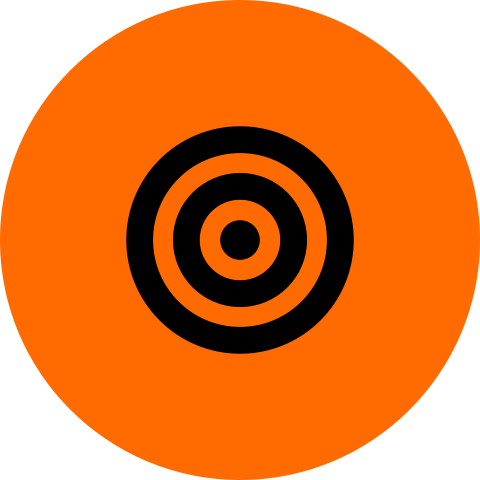

Où investir, qui aborder à l’arrivée, et à quelles conditions
Plus de la moitié des passagers jugent leur vol neutre ou décevant. À partir de 103 904 réponses à l’enquête post-vol, nous répondons aux deux questions de la direction Expérience Client.
des passagers sont satisfaits
58 % en voyage pro, 10 % en voyage perso
5 375 €
gagnés pour 1 000 passagers arrivants
3,8 fois plus qu’au hasard
0 enfant
signalé aux équipes
genre exclu, écran agent minimal
Ce que nous avons trouvé
La satisfaction dépend d’abord du motif du voyage et de la classe.69 % de satisfaits en Business contre 19 % en Eco ; les clients fidèles le sont deux fois plus.
Les leviers sont numériques et changent selon le motif.Voyage pro : embarquement en ligne, divertissement, siège. Voyage perso : Wi-Fi et réservation en ligne. Portes et horaires : aucun lien.
Un modèle repère les mécontents dès l’atterrissage.Les équipes abordent 100 passagers sur 1 000 : 94 sont réellement mécontents. +916 € par rapport à la meilleure règle simple.
Un nouvel usage des données, sous conditions.Aucun mineur signalé (coût : 2 % du gain), information et droit d’opposition, ni score ni âge montrés aux agents.
Ce que nous vous proposons
1Financer le parcours numérique, le Wi-Fi et les cabinesen testant chaque amélioration sur une partie des vols
2Lancer un pilote d’accueil à l’arrivéeavec un groupe témoin pour mesurer le retour réel des clients
3Encadrer les données avant tout déploiementanalyse d’impact, information des passagers, aucun mineur signalé
Deux fichiers, trois volets, une méthode
Le premier fichier sert à comprendre et à choisir ; le second mesure, une seule fois, ce que vaudra le dispositif le mois prochain.
Deux fichiers, une règle : le test ne sert qu’une fois
129 880
réponses à l’enquête post-vol
103 904
train : explorer, expliquer, comparer les modèles (validation croisée en 5 parts)
25 976
test : les passagers « du mois prochain », lus une seule fois, à la fin
Nos choix de traitement
Une note de 0 = pas de réponseet non une mauvaise note ; 7,9 % des passagers ont au moins un 0
310 retards d’arrivée manquantsremplacés par le retard au départ (corrélation 0,965)
Identifiant retiré, aucun doublonil ne dit rien du passager
Retards extrêmes conservésce sont de vrais retards, et les passagers les plus à risque
Enfants gardés dans l’analyseleur avis compte ; leur signalement est encadré (partie 7)
Résultats reproductiblesgraines fixées : deux exécutions donnent les mêmes chiffres
La règle du jeu économique
Estimations de la direction, utilisées pour choisir le modèle.
1 passager sur 10 peut être abordé par les équipes
1/3des mécontents ne revolent pas×1/2ramenés par une approche×600 €de revenu futur−40 €par approche
+60 €
par mécontent abordé
−40 €
par satisfait abordé pour rien
Aborder est rentable dès que 40 % des passagers abordés sont mécontents. On juge donc les modèles au gain net, pas à l’exactitude.
Le déroulé du rapport
1Synthèsep. 12Données et méthodep. 23Qui est satisfaitp. 34Ce qui fait la différencep. 45Prédire à l'atterrissagep. 56Résultatsp. 67Protection des donnéesp. 78Recommandationsp. 8
La satisfaction dépend surtout du motif du voyage et de la classe
En moyenne, 43,3 % des passagers sont satisfaits. Mais derrière cette moyenne, les profils s’opposent : un voyageur pro en Business et un voyageur perso en Eco ne vivent pas le même vol.
Taux de satisfaits par profil
Force du lien avec la satisfaction
V de Cramér : 0 = aucun lien, 1 = lien parfait
Classe0,505
Motif du voyage0,449
Tranche d’âge0,269
Fidélité0,188
Retard à l’arrivée0,098
Genre0,012
La classe et le motif du voyage pèsent le plus ; le genre ne joue presque pas.
Les plus jeunes et les plus âgés sont les plus critiques
Taux de satisfaits par tranche d’âge (ans)
Le retard pèse, mais moins que le profil
Taux de satisfaits selon le retard à l’arrivée ; 310 retards inconnus exclus
Sur 10 passagers, combien sont satisfaits ?
Voyage pro58,3 % de satisfaits · 71 655 passagers
Voyage perso10,2 % de satisfaits · 32 249 passagers : presque 9 sur 10 sont mécontents
Ce qui fait la différence : le parcours numérique et le confort
Les 14 notes de service montrent où se joue la satisfaction. Elles servent à expliquer et à orienter le budget, pas à prédire : elles n’existent qu’après l’enquête.
Écart de note entre satisfaits et mécontents
Note moyenne sur 5 des satisfaits moins celle des mécontents ; notes à 0 exclues
Les leviers selon le motif
Voyage pro
Embarquement en ligne1,54
Divertissement à bord1,31
Confort du siège1,14
Voyage perso
Wi-Fi en vol2,10
Réservation en ligne1,88
Embarquement en ligne1,33
Une même dépense n’aura pas le même effet partout : le voyageur perso attend surtout du numérique.
Lié à la satisfaction ne veut pas dire « cause » : sur quoi agir
Facteur
Lien avec la satisfaction
La compagnie peut agir ?
Cause prouvée ?
Action proposée
Wi-Fi en vol
Fort (2,10 en voyage perso)
Oui : réseau
Non démontré
Fiabiliser la connexion
Embarquement en ligne
Fort (1,45)
Oui : parcours numérique
Non démontré
Simplifier l’application
Siège et divertissement
Fort en voyage pro
Oui, mais coûteux
Non démontré
Cibler les lignes affaires
Classe et motif du voyage
Très fort (0,505 et 0,449)
Pas directement
Non démontré
Adapter l’offre par segment
Porte et horaires
Aucun
—
Non démontré
Pas de budget
Pour prouver un effet avant un gros investissement : améliorer un service sur une partie des vols seulement, et comparer la satisfaction.
À l’atterrissage, le modèle n’utilise que ce que la compagnie sait déjà
Le modèle est entraîné sur les répondants mais appliqué à tous les passagers arrivants, qui pour la plupart ne répondront jamais à l’enquête.
Utilisé : connu à l’atterrissage
Classe du billetbillet
Âge et statut de fidélitéréservation et programme de fidélité (hypothèse) ; l’âge n’est jamais montré aux agents
Distance du volplan de vol
Retards au départ et à l’arrivéeopérations
Écarté
Notes de servicen’existent qu’après l’enquête
Motif du voyagedéclaré dans l’enquête, inconnu pour les non-répondants
Genreaucun effet (57,3 % contre 56,1 % de mécontents), risque de discrimination
Pourquoi un modèle ? Parce que le motif du voyage est inconnu
Gain net pour 1 000 passagers arrivants, validation croisée sur train ; maximum possible : 6 000 €
Si le motif était connu
+107 € seulement pour le modèle : une règle simple suffirait
Sans le motif : notre cas
+768 € pour le modèle : c’est là qu’il se justifie
La régression logistique fait moins bien que la règle simple. Une forêt aléatoire a aussi été testée et écartée : ses résultats changeaient d’une exécution à l’autre.
Ce qui pèse dans ses décisions
Importance par permutation : perte de qualité quand on mélange la variable
Qui il signale
Tous
Signalés
Classe Eco
45 %
80 %
Clients non fidèles
18 %
61 %
Âge médian
40 ans
33 ans
Retard médian à l'arrivée
0 min
13 min
Surtout des passagers en Eco, peu fidèles, plus jeunes et un peu retardés.
Sur 100 passagers abordés, 94 sont vraiment mécontents
Modèle retenu : gradient boosting sans le motif du voyage, mineurs exclus. Il a été mesuré une seule fois sur les passagers du mois prochain : 5 375 € gagnés pour 1 000 passagers arrivants.
Sur 100 passagers abordés
94 vraiment mécontents6 satisfaits abordés pour rien
Sur 25 976 passagers jamais vus, le modèle bat toute règle
+916 €
par rapport à la meilleure règle
× 3,8
par rapport au hasard
≈ 250 €
d’approches inutiles pour 1 000 passagers
Validation croisée93,9 % · 5 386 €
Test final, exécuté une fois (2026-10-14 15:05)93,8 % · 5 375 €
Le chiffre annoncé est fiableles deux mesures sont quasi identiques
Faut-il aborder 10 % des passagers ?
Gain pour 1 000 passagers selon la part abordée (validation croisée). La précision reste au-dessus de 95 % : chaque approche supplémentaire rapporte, on utilise toute la capacité.
Limites à garder en tête
Capacitéenviron 470 mécontents sur 1 000 ne seront jamais abordés, quel que soit le modèle.
Répondantsle modèle apprend sur ceux qui ont répondu ; il faudra suivre sa performance sur tous les passagers.
Hypothèsesrentable jusqu’à environ 94 € par approche ; l’effet réel d’une approche reste à mesurer (pilote avec groupe témoin).
Un nouvel usage des données, acceptable sous quatre conditions
L’enquête servait à mesurer la satisfaction. Signaler au personnel des passagers qui, pour la plupart, n’y ont jamais répondu est un nouvel usage de leurs données : il doit être encadré.
Aucun enfant n’est jamais signalé
23,7 %
des signalés seraient mineurs sans précaution (contre 7,6 % des passagers)
0 %
après exclusion des mineurs du signalement
−126 €
seulement pour 1 000 passagers (2 % du gain)
Retirer l’âge du modèle ne suffirait pas : −539 € et encore 11,6 % de mineurs signalés, repérés par d’autres indices. C’est l’âge qui permet de les exclure.
Informer et permettre de refuserNouvelle finalité : politique de confidentialité mise à jour, intérêt légitime, droit d’opposition simple, analyse d’impact (AIPD) avant déploiement.
Protéger les enfantsLe profilage des enfants appelle une protection renforcée : aucun mineur n’est signalé ; piste : s’adresser à l’adulte accompagnant.

Limiter les informationsClasse, fidélité, distance, retards et âge. Genre et motif du voyage exclus.
Montrer le minimumNi score, ni âge, ni genre, ni réponses à l’enquête ; signalements effacés après le vol.
Vol 1234 · arrivée 14:35 · porte 21 (exemple fictif)
Siège 12BÀ accueillir en priorité
Motif : retard de 45 minutes
Action suggérée : demander comment s’est passé le vol, proposer une collation ou une aide pour la correspondance.
Ce que l’agent ne voit jamais
Le score de risque
L’âge ou le genre
Une étiquette « mécontent »
Les réponses à l’enquête
Investir dans le service, et aborder les bons passagers
Les deux leviers se complètent : le modèle permet d’aborder les bons passagers à l’arrivée, mais seule l’amélioration du service atteint tous les autres.
Sur 1 000 passagers arrivants
≈ 570
sont neutres ou mécontents
100
sont abordés, dont 94 vraiment mécontents
≈ 470
restent hors de portée : seul le service les atteint
Où investir le budget
1
Parcours numériqueembarquement en ligne (voyage pro), réservation en ligne (voyage perso) : application et site
2
Wi-Fi en volle service le plus pénalisant pour les voyageurs perso (écart de 2,10) : stabiliser, offrir la messagerie
3
Cabinesconfort du siège et divertissement, d’abord sur les lignes affaires
–
Pas de budgetemplacement des portes et horaires, sans lien avec la satisfaction
Déployer pas à pas
Pilotequelques aéroports, avec un groupe témoin de passagers signalés mais non abordés
Mesurertaux de retour réel, satisfaction, performance du modèle sur tous les passagers
Déciderétendre si le gain se confirme, après l’analyse d’impact
Les trois décisions que nous vous demandons
1Financer le parcours numérique, le Wi-Fi et les cabines
2Lancer le pilote d’accueil avec groupe témoin
3Encadrer l’usage des données avant tout déploiement
Annexe A — Tous les chiffres du modèle
Valeurs exactes des graphiques des parties 5 et 6.
A.1 Comparaison en validation croisée (train)
Avec le motif du voyage
Approche
Précision
Rappel
Gain pour 1 000
Hasard
56,6 %
10,0 %
1 655 €
Règle : plus gros retards
64,2 %
11,3 %
2 422 €
Règle : voyage perso puis retard
95,6 %
16,9 %
5 565 €
Régression logistique
93,7 %
16,5 %
5 366 €
Gradient boosting
96,7 %
17,1 %
5 672 €
Sans le motif du voyage
Approche
Précision
Rappel
Gain pour 1 000
Règle : Eco puis retard
87,4 %
15,4 %
4 744 €
Régression logistique
85,5 %
15,1 %
4 551 €
Gradient boosting
95,1 %
16,8 %
5 512 €
Gradient boosting, mineurs exclus (retenu)
93,9 %
16,6 %
5 386 €
Gradient boosting sans l’âge
89,7 %
15,8 %
4 973 €
Gain maximal possible : 6 000 € pour 1 000 passagers. Rappel : part de tous les mécontents qui sont abordés (limitée par la capacité de 10 %).
A.2 Évaluation finale (test, exécution unique)
Approche
Abordés
Mécontents abordés
Précision
Gain pour 1 000
Hasard
2 597
1 410
54,3 %
1 429 €
Règle : Eco puis retard
2 597
2 197
84,6 %
4 459 €
Modèle retenu
2 597
2 435
93,8 %
5 375 €
Exécuté le 2026-10-14 15:05 ; notebook 03.
A.3 Capacité utilisée (modèle sans motif)
Part abordée
Précision
Gain pour 1 000
2 %
98,3 %
1 165 €
5 %
97,0 %
2 851 €
8 %
95,9 %
4 472 €
10 %
95,1 %
5 512 €
A.4 Importance des variables
Variable
Importance
Classe
0,216
Âge
0,064
Fidélité
0,064
Retard à l'arrivée
0,017
Distance
0,009
Retard au départ
0,001
Annexe B — Tous les chiffres de l’analyse
Valeurs exactes des graphiques des parties 2 à 4.
B.1 Taux de satisfaits
Groupe
Satisfaits
Voyage pro
58,3 %
Voyage perso
10,2 %
Classe Business
69,4 %
Classe Eco Plus
24,6 %
Classe Eco
18,6 %
Clients fidèles
47,7 %
Clients non fidèles
23,7 %
Femmes
42,7 %
Hommes
43,9 %
Âge 0-18
17,3 %
Âge 19-30
35,4 %
Âge 31-45
48,7 %
Âge 46-60
57,4 %
Âge 61+
20,8 %
Retard Aucun
47,3 %
Retard 1-15 min
41,3 %
Retard 16-60 min
35,4 %
Retard +60 min
35,7 %
B.2 Force du lien (V de Cramér)
Facteur
V
Classe
0,505
Motif du voyage
0,449
Tranche d’âge
0,269
Fidélité
0,188
Retard à l’arrivée
0,098
Genre
0,012
B.3 Notes de service
Service
Satisfaits
Mécontents
Écart
Part de 0
Embarquement en ligne
4,15
2,71
1,45
2,34 %
Divertissement à bord
3,96
2,89
1,07
0,01 %
Wi-Fi en vol
3,39
2,40
0,99
2,99 %
Confort du siège
3,97
3,04
0,93
0,00 %
Service à bord
3,86
3,02
0,84
0,00 %
Espace pour les jambes
3,84
3,01
0,83
0,45 %
Propreté
3,74
2,94
0,81
0,01 %
Réservation en ligne
3,25
2,61
0,63
4,32 %
Enregistrement
3,65
3,04
0,60
0,00 %
Bagages
3,97
3,38
0,59
0,00 %
Service en vol
3,97
3,39
0,58
0,00 %
Repas et boissons
3,53
2,96
0,56
0,10 %
Porte d'embarquement
2,98
2,98
0,00
0,00 %
Horaires pratiques
3,15
3,28
-0,14
5,10 %
B.4 Qui a fait quoi
Léa — nettoyage, facteurs de satisfaction, leviers budgétaires (notebook 01). Jeanne — variables à l’atterrissage, modèles, gain, évaluation finale (notebooks 02 et 03). Côme — protection des données, rapport, présentation.
B.5 Reproduire ce rapport
Dépôt Git du groupe (README : qui a fait quoi ; DECISIONS.md : journal des choix). Commandes : pip install -r requirements.txt, python clean_data.py, exécuter les notebooks 01 → 02 → 03, puis python rapport/generer_rapport.py. Tous les chiffres de ce rapport sont recalculés par ce script, sauf le test final, lu dans le notebook 03.